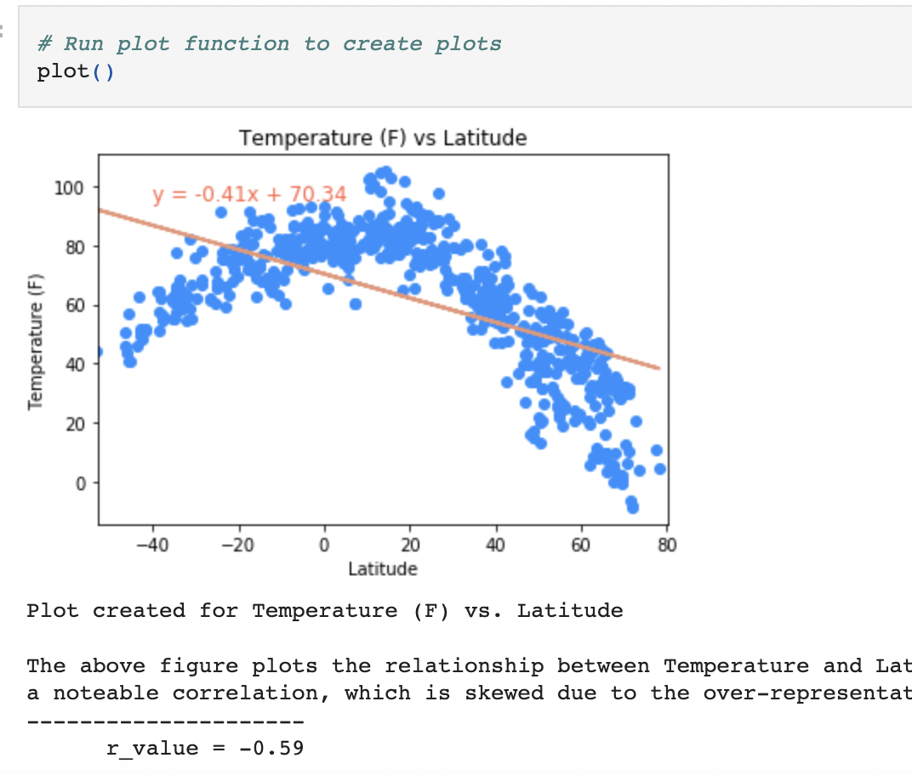

The purpose of this project is to display our ability to use APIs to gather and plot data using Python/Pandas. We were tasked with randomly generating >500 coordinates with their corresponding latitudes and longitudes, then to grab the nearest city to these coordinates, accounting for and removing any duplicates. From there we placed those city names into OpenWeatherMap's "Current Weather Data" API to grab the following pertinent information: latitude and longitude, temperature, humiditiy, cloudiness, and wind speed.
From this information a Pandas DataFrame was created and exported as an external .csv file. We were tasked with creating four plots for the initial data:
- Temperature vs. Latitude
- Humidity vs. Latitude
- Cloudiness vs. Latitude
- Wind speed vs Latitude
Regression lines and values were also calculated, plotting the regression line.
I chose to create all plots using a single function 'plot()' to avoid excess repetition. This was a decision that caused many headaches but would utimately be a worthwhile learning experience. I would like to re-visit this exercise and attempt to further clean-up the plotting function.
To expand further, the cities were separated into Northern and Southern Hemispheres to allow for more accurate plotting. The previously-created plotting function was re-used and modified for these plots. Given more time I would like to create a function to plot all plots without excess repetition.